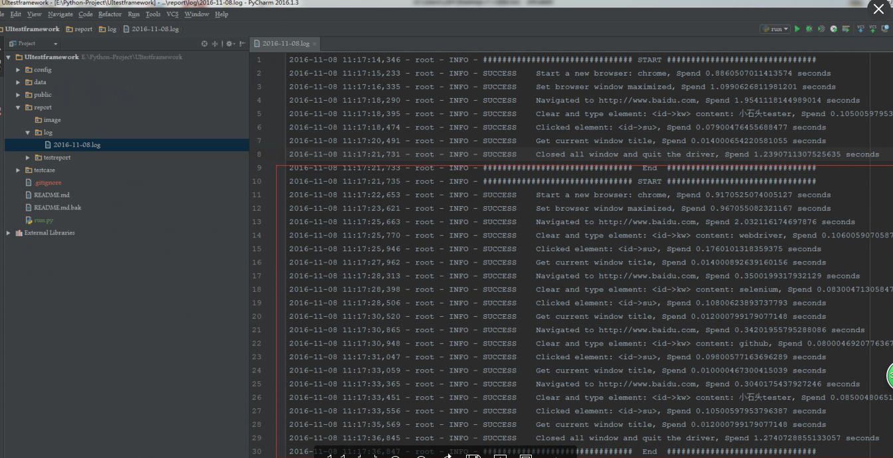
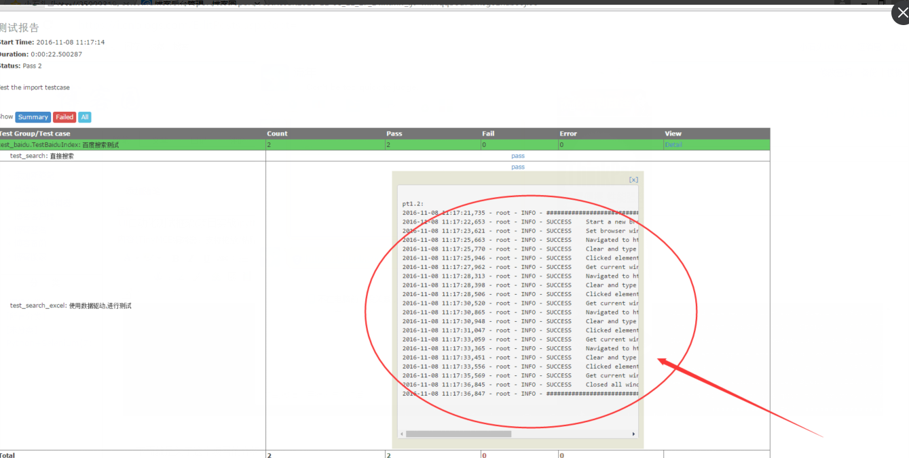

UI自动化测试框架(项目实战)python、Selenium(日志、邮件、pageobject)
其实百度UI自动化测试框架，会出来很多相关的信息，不过就没有找到纯项目的，无法拿来使用的；所以我最近就写了一个简单，不过可以拿来在真正项目中可以使用的测试框架。
项目的地址：https://github.com/xiaoshitoutester/UItestframework
这里完全是干货，中间涉及到很多知识点，可以下载到本地然后，修改下项目地址，编写测试用例就可以执行了，日志，报告什么的都有：
这里日志打印是我新加的，在自动化测试中，经常出现各种奇怪的问题，导致不好定位问题，现在我将webdriver的各种操作都加了日志，对于我ui测试问题定位很有帮助，下面的是报告中、log文件中日志记录截图：


接下来就是关于这个项目的介绍：
UItestframework项目目前具有以下功能：
1、对webdriver进行了第二次的简单封装，使用更加方便 public/common/pyselenium.py
(ps：这个是在虫师的pyse基础加了打印日志功能,参考：https://github.com/defnngj/pyse)
2、可以对excel表进行数据读取，完成数据驱动:public/common/datainfo.py
3、具有打印日志的功能，打印在控制台和文件中：public/common/log.py,日志保存在report/log/目录下
4、读取配置文件(.ini文件):public/common/readconfig.py
5、具有发邮件的功能:public/common/sendmail.py
6、生成测试报告：html测试报告的路径：report/testreport/目录下
7、使用了PageObject模式来编写测试脚本
整个项目的目录结构:
├─config 配置文件的目录
│ │ config.ini 存放配置文件
│ │ globalparam.py 重要的全局参数，如log、report的路径配置等
│ │ __init__.py
│ │
│
├─data 测试数据
│ ├─formaldata # 正式环境测试数据
│ └─testdata # 测试环境的数据
│ searKey.xlsx
│
├─public 公共的文件库
│ │ __init__.py
│ │
│ ├─common 封装的公共方法
│ │ │ basepage.py
│ │ │ datainfo.py
│ │ │ log.py
│ │ │ mytest.py
│ │ │ publicfunction.py
│ │ │ pyselenium.py
│ │ │ pyselenium20161107.py
│ │ │ readconfig.py
│ │ │ sendmail.py
│ │ │ __init__.py
│ │ │
│ │
│ ├─pages 使用pageobject模式编写测试脚本，存放page的目录
│ │ │ baiduIndexPage.py
│ │ │ __init__.py
│
├─report 测试报告
│ ├─image 截图目录
│ ├─log 日志目录
│ │ 2016-11-07.log
│ │
│ └─testreport html测试报告目录
│ TestResult2016-11-07_16_15_51.html
│
└─testcase 存放测试用例
│ test_baidu.py
使用说明:
安装响应的库: pip install xlrd,selenium,configparser
1、在config.ini中配置项目路径：project_path
2、测试数据放在data目录下面
3、使用pageobject，写page页面，在测试用例里面调用放在public/pages目录下
4、在testcase目录下面，编写测试用例，可以分模块编写，建相应的目录
5、执行run.py,就可以执行所有的测试用例
6、在report/log里面查看日志
7、在report/testreport里面查看html测试报告
关于pyselenium的使用:
该py文件是根据虫师的pyse改的，加了一个日志，根据自己的需要加了几个函数
可以参考虫师的pyse,github地址:https://github.com/defnngj/pyse
虫师的博客园地址：https://github.com/defnngj/pyse
导入PySlenium文件
import PySelenium
1、启动浏览器：
启动谷歌浏览器
dr = PySelenium.PySelenium('chrom')
启动远程浏览器比如使用grid施行分布式执行
dr = PySelenium.PySelenium(RChrome','127.0.0.1:8080')
2、在地址栏输入网址：
dr.open('http://www.baidu.com')
3、窗口最大化
dr.max_window()
4、设置浏览器的窗口的大小
dr.set_window(800,500)
5、不清除文本框的内容直接输入值(比如说：进行文件上传时，上传文件的路径，如果清除就会报错)：
dr.type('id->su','小石头tester')
6、先清除文本框的内容，然后再输入值（用得很多）：
dr.clear_type('name->su','虫师')
7、直接点击元素
dr.click('css->#kw')
8、右键点击元素：
dr.right_click('id->kw')
9、将鼠标移动到一个元素上
dr.move_to_element('clas->btn1.btn-green.btn-search')
10、双击元素
dr.double_click("id->kw")
11、将一个元素拖拽到另外一个元素上
dr.drag_and_drop('id->kw1','id->kw2')
12、根据连接的text来点击(<a href="http://www.baidu.com">百度</a>)
dr.click_text('百度')
13、关闭窗口，driver
dr.quit()
14、执行js脚本
dr.js('script')
15、获取元素的属性
dr.get_attribute("id->su","href")
16、获取元素的文本信息text
dr.get_text('id->su')
17、返回当前页面的title
dr.get_title()
18、返回当前页面的url
dr.get_url()
20、进入frame
dr.switch_to_frame('id->kw')
21、退出frame
dr.switch_to_frame_out()
22、判断元素是否存在
dr.element_exist('id->kw')
23、截图
dr.take_screenshot('file_path')
24、进入最新的table
dr.into_new_window()
25、输入内容并且回车
dr.type_and_enter('id->kw')
26、使用js来点击某个元素
dr.js_click('id->kw')
27、返回原生的webdriver，进行个性化需求
dr.origin_driver()
接到就到这里吧，其他功能以后会逐步添加，希望对项目的测试能带来更高的效率；也希望给各位看官带来帮助，也希望能得到大神指点，让框架更加完善，健壮。。。
UI自动化测试框架(项目实战)python、Selenium(日志、邮件、pageobject)的更多相关文章
- selenium项目总结（UI自动化测试平台搭建、测试报告生成、邮件转发）
最近博主完成了一个web端UI自动化平台测试环境搭建,包括常用的操作流程组合成方法,组织测试用例,利用框架及报告文件生成,最后通过邮件添加附件的格式发送. 首先UI自动化平台的核心是selenium+ ...
- 避免重复造轮子的UI自动化测试框架开发
一懒起来就好久没更新文章了,其实懒也还是因为忙,今年上半年的加班赶上了去年一年的加班,加班不息啊,好了吐槽完就写写一直打算继续的自动化开发 目前各种UI测试框架层出不穷,但是万变不离其宗,驱动PC浏览 ...
- 【转】Web UI自动化测试原理
目前市面上有很多Web UI自动化测试框架,比如WatiN, Selinimu,WebDriver,还有VS2010中的Coded UI等等. 这些框架都可以操作Web中的控件,模拟用户输入,点击等 ...
- Google推出iOS功能性UI测试框架EarlGrey
经过了一段时间的酝酿后,Google很高兴地宣布了EarlGrey,一款针对于iOS的功能性UI测试框架.诸如YouTube.Google Calendar.Google Photos.Google ...
- 使用jenkins + python + selenium一步步搭建web自动化测试“框架”（1） - 各部件简介
原先搭建过一个自动化测试框架,迷迷糊糊不求甚解,算是搭建了一个仅限于能用的.根本算不上框架的玩意儿. 现在回过头来好好看看究竟每一步是怎么联系起来的,是怎么运行起来的. 本次博客先说说各部件都是干什么 ...
- Selenium Web 自动化 - 项目实战（三）
Selenium Web 自动化 - 项目实战(三) 2016-08-10 目录 1 关键字驱动概述2 框架更改总览3 框架更改详解 3.1 解析新增页面目录 3.2 解析新增测试用例目录 3. ...
- 给缺少Python项目实战经验的人
我们在学习过程中最容易犯的一个错误就是:看的多动手的少,特别是对于一些项目的开发学习就更少了! 没有一个完整的项目开发过程,是不会对整个开发流程以及理论知识有牢固的认知的,对于怎样将所学的理论知识应用 ...
- 基于selenium的pyse自动化测试框架
WebUI automation testing framework based on Selenium 介绍: pyse基于selenium(webdriver)进行了简单的二次封装,比seleni ...
- 关于去哪儿网的UI自动化测试脚本（Python实现）
UI自动化测试Qunar机票搜索场景访问Qunar机票首页http://flight.qunar.com,选择“单程”,输入出发.到达城市,选择today+7日后的日期,点“搜索”,跳转到机票单程搜索 ...
随机推荐
- 使用packer制作vagrant centos box
使用packer制作vagrant box:centos 制作vagrant box,网上有教程,可以自己step by step的操作.不过直接使用虚拟在VirtualBox中制作vagrant b ...
- silverlight如何通过单独部署的WCF站点访问sharepoint2013的图片库
最近有项目silverlight通过单独部署的WCF站点访问sharepoint2013的图片库,需要做个笑脸墙效果如下: 结果开发完毕后无法在SP站点显示出来.使用VS自带的WCF工具进行测试.如下 ...
- TinyFrame升级之七：重构Repository和Unit Of Work
首先,重构的想法来源于以下文章:Correct use of Repository and Unit Of Work patterns in ASP.NET MVC,因为我发现在我的框架中,对Unit ...
- Python基础-字符串格式化_百分号方式_format方式
Python的字符串格式化有两种方式: 百分号方式.format方式 百分号的方式相对来说比较老,而format方式则是比较先进的方式,企图替换古老的方式,目前两者并存.[PEP-3101] This ...
- asp.net core csrf
如果用tag 比如 <form asp-action="Login" asp-controller="Account" method="post ...
- 利用canvas实现抽奖转盘---转载别人的
功能需求 转盘要美观,转动效果流畅. 转盘上需要显示奖品图片,并且奖品是后台读取的照片和名字. 转动动画完成后要有相应提示. 获取的奖品具体算法在数据库里操作,前端只提供最后的效果展示. 知识要点 ...
- wget cooikes 下载
2.下来用wget带cookie的命令下载,命令如下: wget -c –load-cookies=cookies.txt ”下载地址” -O “文件名” & [文件名处自己命名 ...
- 转载：SQL Server 2008-建立分区表(Table Partition) 转载
数据库结构和索引的是否合理在很大程度上影响了数据库的性能,但是随着数据库信息负载的增大,对数据库的性能也发生了很大的影响.可能我们的数据库在一开始有着很高的性能,但是随着数据存储量的急速增长—例如订单 ...
- javax.persistence.PersistenceException: No Persistence provider for EntityManager named ...
控制台下输出信息 原因:persistence.xml必须放在src下META-INF里面. 若误放在其他路径,就会迷路.
- eclipse快捷键使用
Eclipse的编辑功能非常强大,掌握了Eclipse快捷键功能,能够大大提高开发效率.Eclipse中有如下一些和编辑相关的快捷键.1. [ALT+/]此快捷键为用户编辑的好帮手,能为用户提供内容的 ...